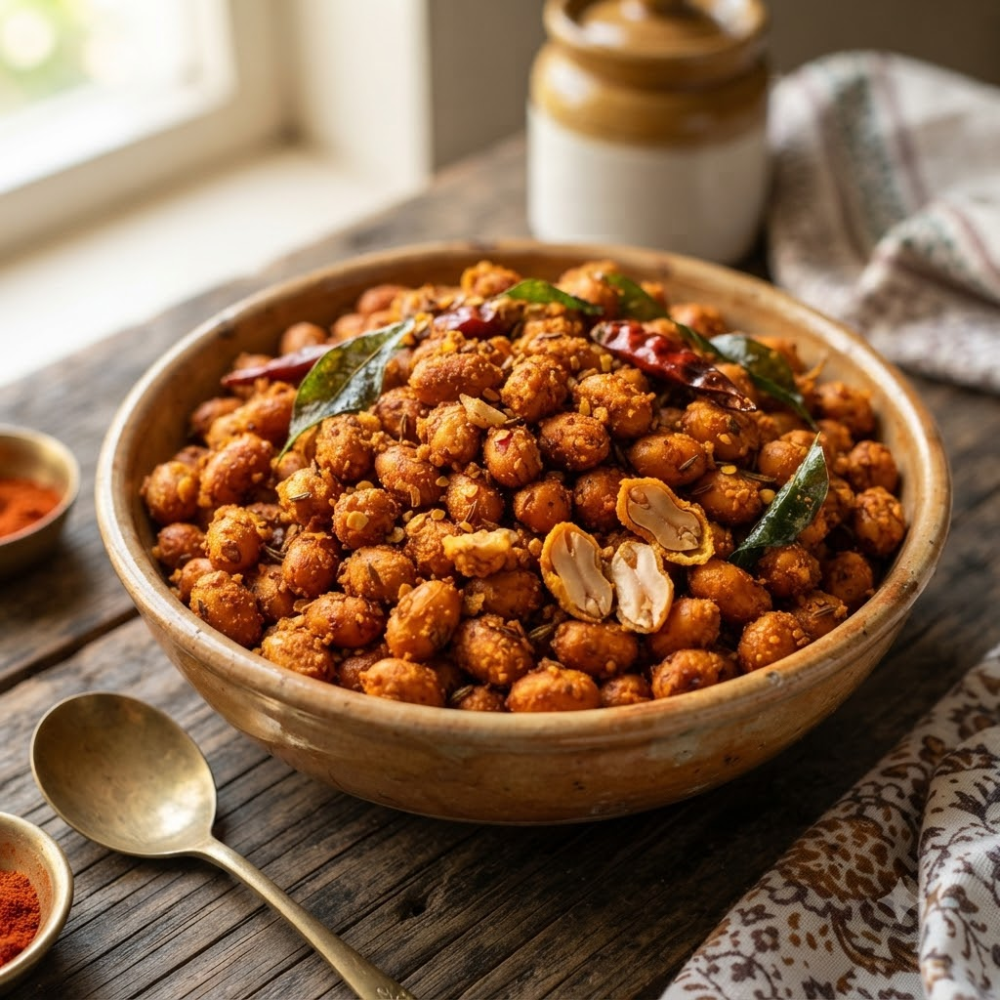

Masala Peanuts

Masala Peanuts
Airfryer – Fry 180°C 9 min — Serves 4
🔥 Airfryer🍽 Serves 4
Ingredients
- 1 cup raw peanuts
- 1 tbsp gram flour (besan)
- 1/2 tsp red chilli powder (lal mirch powder)
- 1/4 tsp turmeric (haldi)
- 1/2 tsp oil
- Salt to taste
- Few curry leaves (kadi patta)
Method
1Preheat: Preheat the Airfryer to 180°C for 4 minutes before adding the food to the basket.
2Toss peanuts with gram flour, spices, oil and salt until evenly coated.
3Spread in a single layer in the basket.
4Air-fry at 180°C for 9 minutes, shaking every 3 minutes, until crisp.
5Toss in curry leaves for the last 2 minutes.
Tip: Let peanuts cool fully before storing — they crisp up further as they cool.